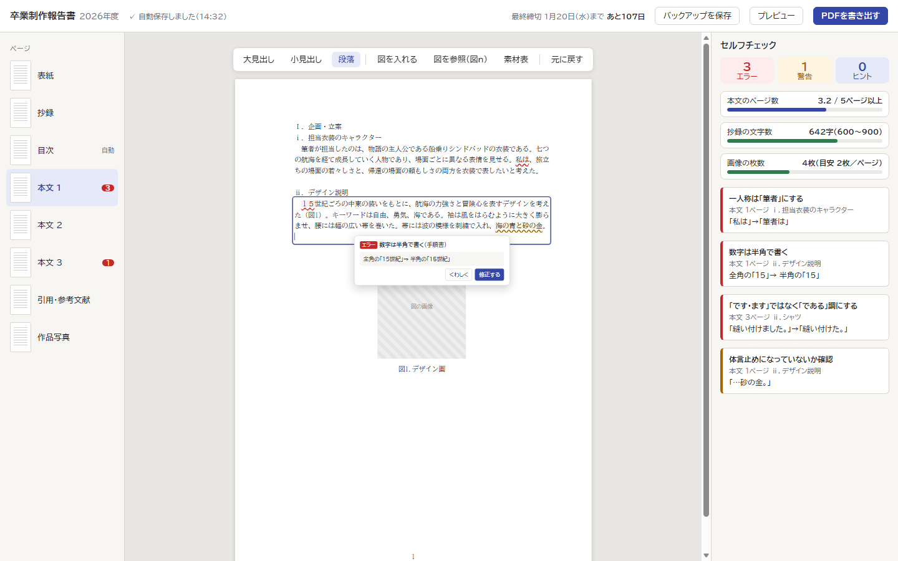
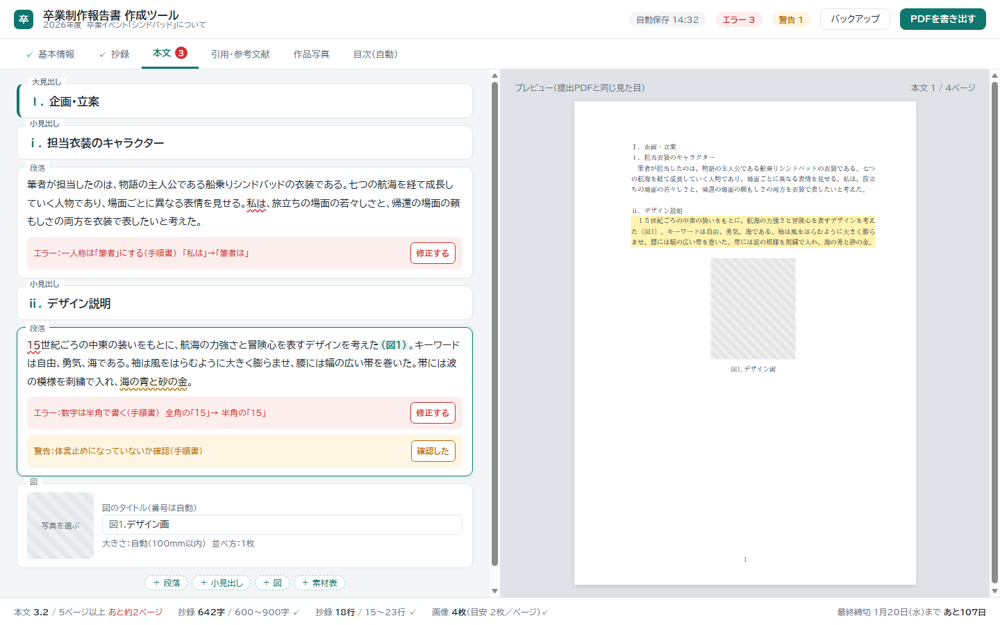
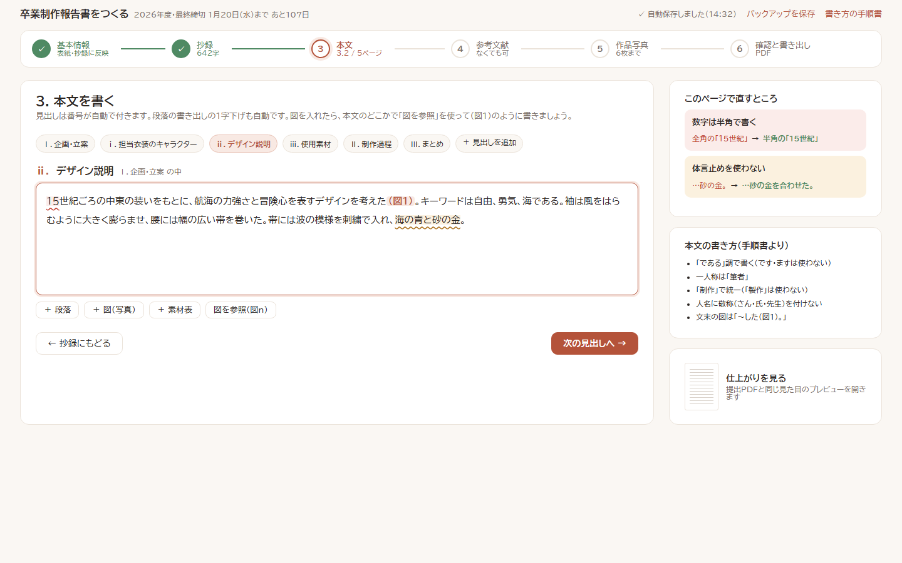

画面の構成と見た目の案です。中身は見本用の架空の文章です。配色は案ごとに変えていますが、構成と配色は別々に組み合わせられます。

A4の紙面そのものに書き込む。左にページ一覧、右にセルフチェック。Wordに近い感覚で、仕上がりを見ながら書ける。

左で見出し・段落・図を部品ごとに入力し、右に提出PDFと同じプレビュー。指摘は該当する部品のすぐ下に出る。

基本情報→抄録→本文→参考文献→作品写真→書き出しの順に進む。各ステップの横に手順書のルールと直すところを表示。